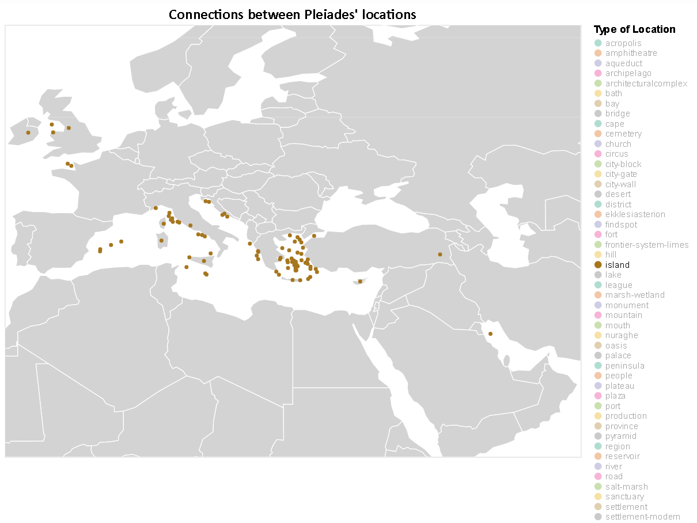
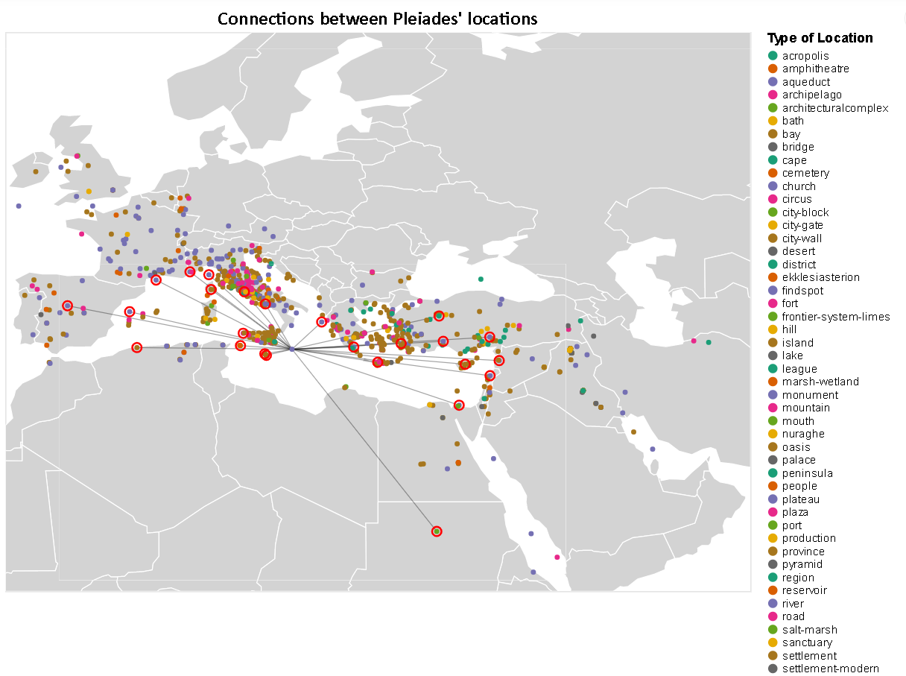
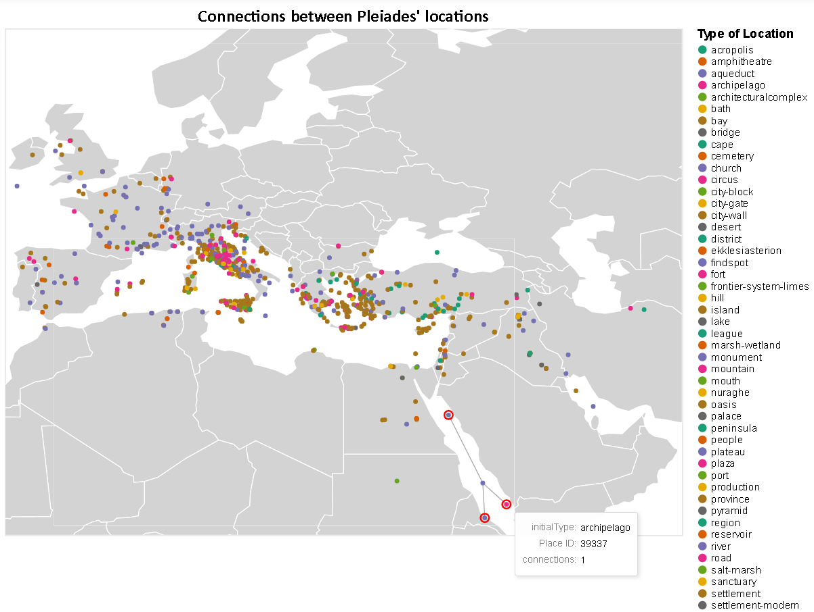

What can we learn from the visualization?
This visualization shows the connections between pleiades' places around Mediterranean Sea. It can also focus on a specific structure and find its relationships
What is the name for the type of visualization(s) used?
For these visualizations we used maps
Data Preparation
import altair as alt from vega_datasets import data import pandas as pd import numpy as np places = pd.read_csv('pleiades-places.csv') alt.data_transformers.disable_max_rows() #Choose only the columns we need and remove missing or wrong inputs places = places[['reprLong','reprLat','connectsWith','hasConnectionsWith','featureTypes','path']] places.dropna(subset=['reprLong','reprLat','connectsWith','hasConnectionsWith','featureTypes','path'],inplace=True) places['path'] = places['path'].str.replace('/places/','') places['initialType'] = places['featureTypes'].str.split(',').str[0] places['initialType'] = places['initialType'].str.replace('-2','') places = places[places.featureTypes != 'unknown'] places = places[places.featureTypes != 'unknown,'] places.drop(columns=['featureTypes'],inplace=True) places['connectsWith'] = places['connectsWith'].str.replace(' ','') places['hasConnectionsWith'] = places['hasConnectionsWith'].str.replace(' ','') places.reset_index(inplace=True) places.drop(columns=['index'],inplace=True) places.drop_duplicates(subset=['reprLong', 'reprLat'], inplace=True) #Create a numpy array from the dataframe(general bad practise but here is uselful) #From the numpy array we create a list of connections between the places arr = np.array(places,dtype=str) con_list = [] for i in range(arr.shape[0]): connections = arr[i][2].split(',') x = arr[i][3].split(',') for con in x: connections.append(con) for con in connections: for k in range(arr.shape[0]): if con == arr[k][4]: con_list.append([arr[i][4],arr[k][4]]) break #convert the connection list into dataframe connections = pd.DataFrame(con_list) connections.columns=['origin','destination'] connections.sort_values(by=['origin'],inplace=True) connections.reset_index(inplace=True) connections.drop(columns=['index'],inplace=True)
Connections of Pleiades's places
In the following visualization we can select specific type of locations to appear on map. By clicking on a location we can see the connections that a specific place has with other places. We can also see how many connections a place has.
# Create on click selection select_city = alt.selection_single( on="click", fields=["origin"], empty="none" ) #legend selection for types selection = alt.selection_single(fields=['initialType'], bind="legend") #world map from vega_datasets world_map = alt.topo_feature(data.world_110m.url, 'countries') # Define which attributes to lookup from places lookup_data = alt.LookupData( places, key="path", fields=["path", "reprLat", "reprLong","initialType"] ) #world map background from topojson data background = alt.Chart(world_map).mark_geoshape( fill="lightgray", stroke="white" ).properties( width=800, height=600 ) #create the connections between places edges = alt.Chart(connections).mark_rule(opacity=0.35).encode( latitude="reprLat:Q", longitude="reprLong:Q", latitude2="lat2:Q", longitude2="long2:Q" ).transform_lookup( lookup="origin", from_=lookup_data ).transform_lookup( lookup="destination", from_=lookup_data, as_=["path", "lat2", "long2", "type"] ).transform_filter( select_city ) #point for each location of the dataset colored with its type points = alt.Chart(connections).mark_circle().encode( latitude="reprLat:Q", longitude="reprLong:Q", color=alt.Color("initialType:N",scale=alt.Scale(scheme="dark2"), legend=alt.Legend(symbolLimit=0),title="Type of Location"), opacity=alt.condition(selection, alt.OpacityValue(1), alt.OpacityValue(0)), tooltip=["initialType:N",alt.Tooltip("origin:N",title="Place ID"), "connections:Q"] ).transform_aggregate( connections="count()", groupby=["origin"] ).transform_lookup( lookup="origin", from_=lookup_data, as_=["path", "reprLat", "reprLong", "initialType"] ).add_selection( select_city, selection ) #highlight all connections for specific place selected_points = alt.Chart(connections).mark_point(size=100).encode( latitude="lat2:Q", longitude="long2:Q", color=alt.value("red"), opacity=alt.value(1) ).transform_lookup( lookup="origin", from_=lookup_data ).transform_lookup( lookup="destination", from_=lookup_data, as_=["path", "lat2", "long2", "type"] ).transform_filter( select_city ) final_map = alt.layer(background + edges + points + selected_points).properties( title="Connections between Pleiades' locations" ).configure_legend( titleFont='Arial', titleFontSize=14, labelFont='Arial', labelFontSize = 12 ).configure_title( fontSize=20, font='Calibri', anchor='middle', color='black' ).project( type= 'equirectangular', scale= 650, center= [25,40], clipExtent= [[0, 0], [800, 600]]) final_map




What are all visual mappings used?
| Mediterranean Sea Map | |
|---|---|
| longitude | longitude of a place |
| latitude | latitude of a place |
| color | initial type of a place |
| tootip1 | initial type of a place |
| tootip2 | Place ID |
| tootip3 | number of connections |
Was there any special data preparation done?
I firstly extract from the dataset only the columns that I will use. Using a
connectsWith and hasConnectionsWith I created a new dataframe containing all those connections between distinct places in separate rows. Grouping by origin (Place ID) in connections dataframe we created the number of connections that each place has.What are the limitations of your design?
One limitation of this visualization is the fact that the map is not scalable, therefore cannot zoom or navigate through the map. Also the high density of places around Italy and Greece does not allow us to clearly distinguish the connections of some places. A scalable map could solve both of this problems.